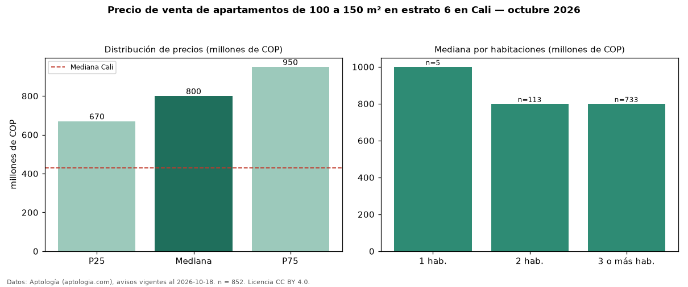

Precio de venta de apartamentos de 100 a 150 m² en estrato 6 en Cali — octubre 2026
Con 852 avisos vigentes, el precio mediano de apartamentos de 100 a 150 m² en estrato 6 en venta en Cali es COP 800 millones. Frente a la mediana de los apartamentos en estrato 6 en venta de Cali (COP 920 millones, n = 2.756), queda 13 % por debajo; este segmento reúne el 31 % de esos avisos. Por metro cuadrado, la mediana es COP 6,29 millones/m² (n = 846), 1 % por encima de los apartamentos en estrato 6 en venta de Cali (COP 6,22 millones/m²). El área mediana anunciada es 125 m². El segmento con más oferta es el de 3 o más habitaciones (733 avisos, mediana COP 800 millones); pasar de 1 habitación a 3 o más habitaciones cambia la mediana −20 %. La administración mediana declarada es COP 850.000 al mes (n = 677). La mediana de todos los apartamentos en venta de Cali es COP 430 millones (+86 % de diferencia). La mitad central de los avisos va de COP 670 millones a COP 950 millones (razón 1,4), una dispersión moderada. Datos: Aptología (aptologia.com), CC BY 4.0 — https://www.aptologia.com/venta/cali. Archivos: PDF, CSV con las cifras y gráfica PNG.

| Avisos únicos | 852 |
|---|---|
| Percentil 25 | COP 670.000.000 |
| Mediana | COP 800.000.000 |
| Percentil 75 | COP 950.000.000 |
| Mediana por m² | COP 6.292.810 |
Fuente: avisos vigentes de portales inmobiliarios recopilados por Aptología, deduplicados (mínimo 30 avisos únicos por celda). Precios pedidos, no cerrados. Fecha: 2026-10-18.